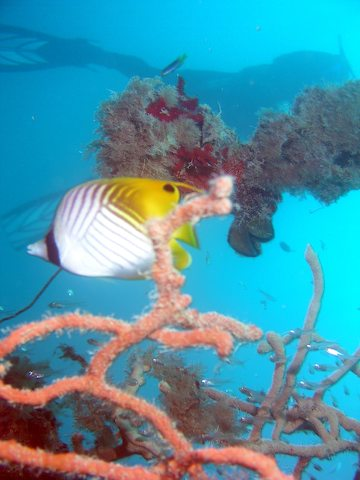

Palau January 2005
Index
Previous
46 of 66
Next
Rating: 2
Badges: Keyword
Aperture: f2
Shutter Speed: 1/100
Exposure Bias: 0ev
Focal Length: 11mm
Keywords: Palau
Name: Palau 2005-01-26 01-22-03
Image Date: 10/11/05 1:22:03 AM PDT
ISO Speed Rating: ISO100
File Size: 3.83 MB
Master Location: Palau
